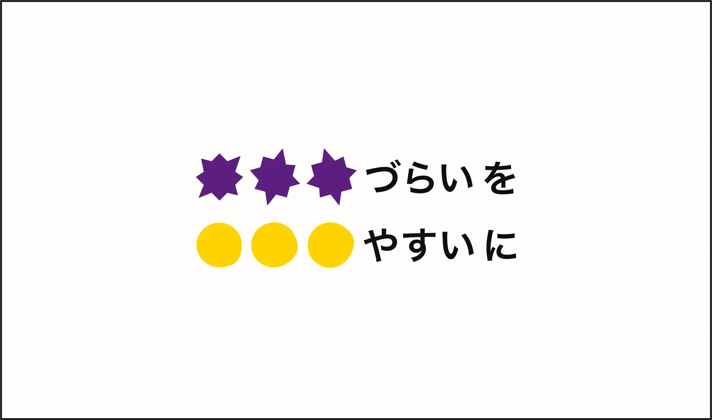
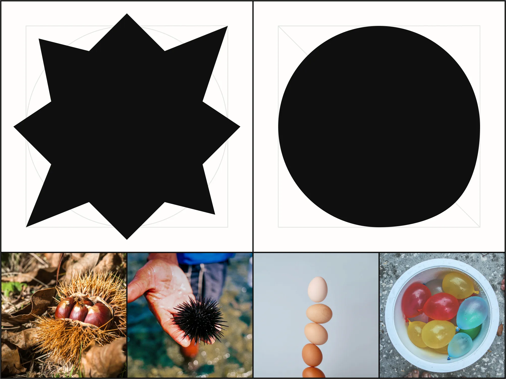
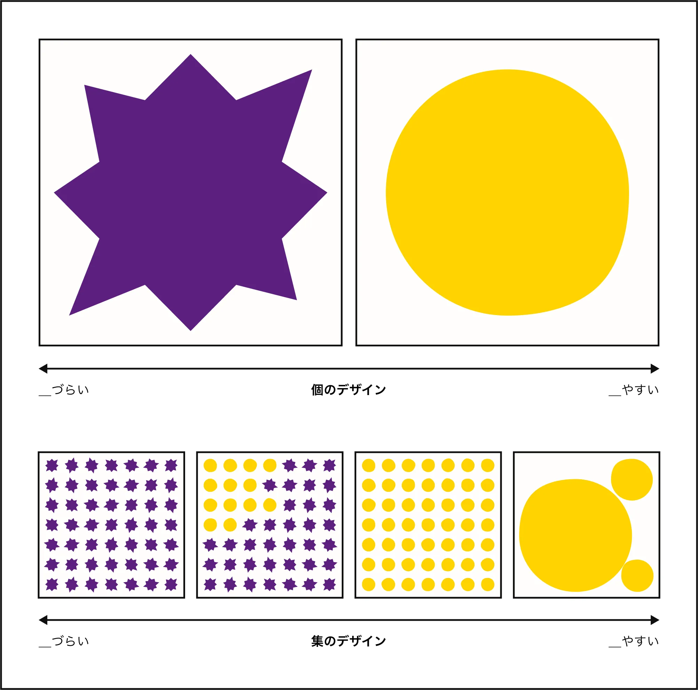
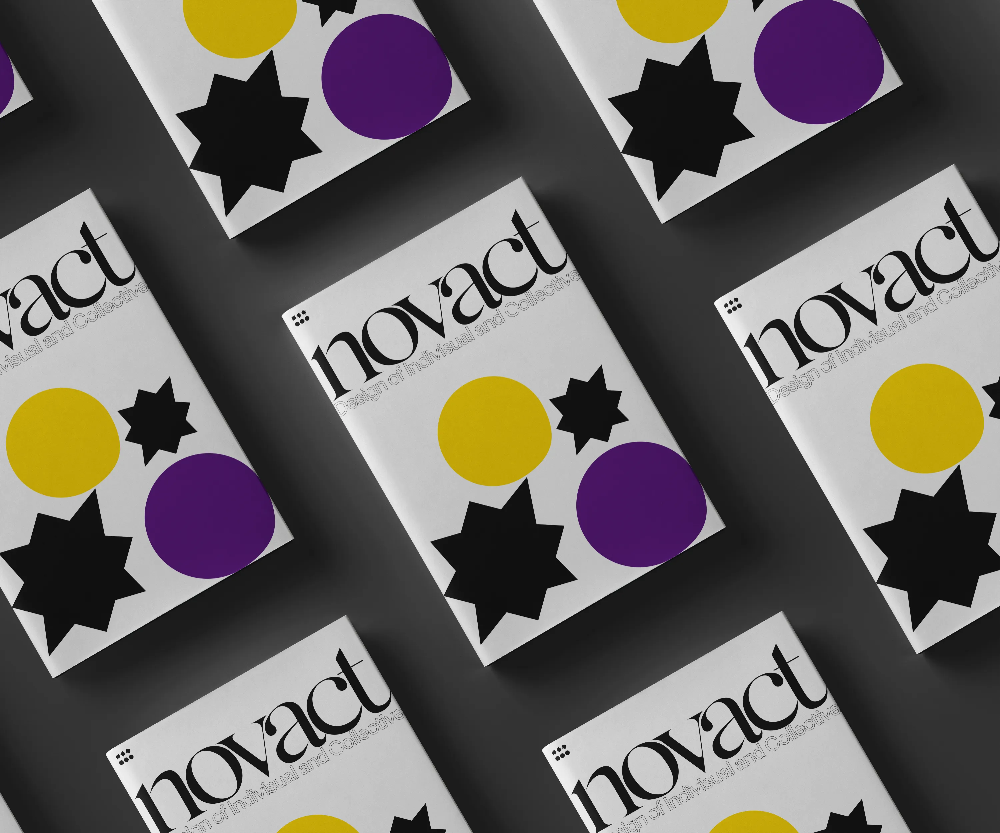

novact Graphic Elements

novact LLCのグラフィックエレメントを作成しました。
ステイトメント：「＿づらいを＿やすいに」

「づらい／やすい」
双方に共通しているのは「そこに『試み』が必要である」ということ。
試みないことが悪いとは断言しない。しかし、試みのその先にある「理想的な未来」の実現可能性を1%でも高くすることはお節介だろうか。
novactは0,100の善悪ではなく、実存する流動的な社会／世界のユーザ体験向上を「個と集のデザイン*1」というコンセプトを基に目指している。

*1：個と集のデザイン
